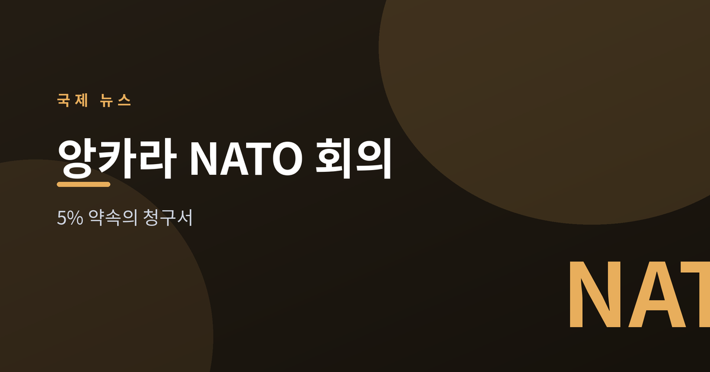
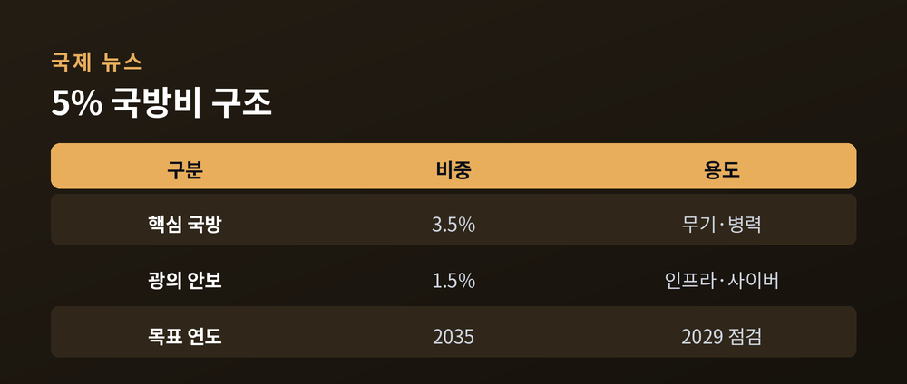
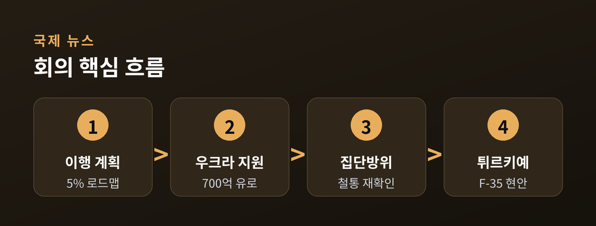
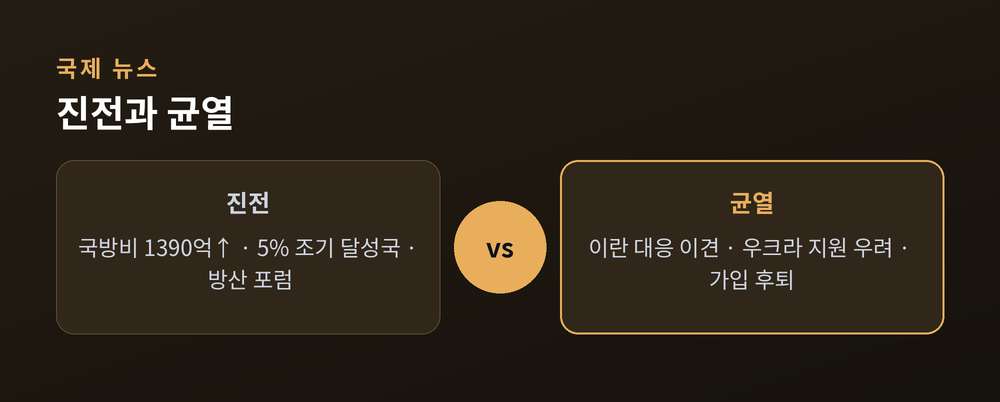

5% 약속의 청구서

7월 7~8일 튀르키예 앙카라에서 열리는 NATO 정상회의는 지난해 헤이그에서 합의한 '국방비 GDP 5%' 약속을 실제 이행으로 옮길 수 있느냐를 시험하는 자리입니다. 32개 회원국 정상이 모이는 이번 회의는 우크라이나 전쟁 장기화, 중동 정세, 미국의 태도 변화가 겹치며 냉전 이후 가장 복잡한 안보 국면 속에 치러집니다.
마르크 뤼터 NATO 사무총장은 국방 투자 확대, 방위산업 생산 강화, 우크라이나 지원이라는 세 가지 우선순위를 제시했습니다. 회의 하루 전인 7일에는 NATO 방위산업 포럼(NSDIF26)도 함께 열립니다.
핵심은 지난해 정상회의에서 스페인을 제외한 31개국이 합의한 목표입니다. NATO 발표에 따르면 회원국들은 2035년까지 GDP의 5%를 국방·안보에 투입하기로 했으며, 이 중 3.5%는 핵심 국방 소요, 나머지 1.5%는 사회기반시설 보호·사이버 방어 등 광의의 안보 투자에 배정됩니다.
"일부 동맹은 이미 2026년에 5% 목표에 도달할 것" — NATO 국방투자 자료

숫자에 합의한 것과 실제 예산을 편성하는 것은 별개의 문제입니다. 이번 앙카라 회의는 각국이 5% 달성을 위한 구체적 이행 계획을 내놓을 수 있는지를 가늠하는 첫 점검대입니다.
균형 있게 보면 진전은 실재합니다. NATO 집계상 2025년 유럽 동맹국과 캐나다는 핵심 국방 투자를 약 1390억 달러 늘렸습니다. 동시에 이견도 뚜렷합니다. 카네기 국제평화재단은 미국의 이란 관련 군사행동을 두고 프랑스가 비판했고 스페인이 자국 기지 사용을 거부하는 등 동맹 내 균열이 드러났다고 지적했습니다.
우크라이나 문제도 미묘합니다. 회원국들은 2026년 700억 유로 규모의 군사 지원을 약속할 것으로 관측되지만, 미국의 신규 기여보다는 유럽과 기존 양자 채널에 무게가 실릴 전망입니다. 워싱턴타임스 등은 트럼프 행정부 아래에서 우크라이나 지원 지속성에 대한 유럽의 우려가 커졌다고 전했습니다.


단기적으로는 '이행 계획 공개'와 '집단방위 재확인'이라는 성과 관리에 초점이 맞춰질 것으로 보입니다. US뉴스가 인용한 정상선언 초안에는 집단방위에 대한 "철통같은 약속"이라는 표현이 담긴 것으로 알려졌습니다.
다만 우크라이나의 NATO 가입 전망은 2024년 워싱턴 정상회의 때보다 후퇴했다는 평가가 지배적입니다. 개최국 튀르키예는 F-35 프로그램 복귀와 제재 완화를 미국과의 양자 현안으로 부각할 것으로 예상됩니다. 결국 이번 회의는 갈등을 '해소'하기보다 '관리'하는 자리가 될 가능성이 큽니다. 5% 청구서를 각국이 어떻게 나눠 감당하느냐가 향후 몇 년 NATO 결속의 시금석이 될 전망입니다.